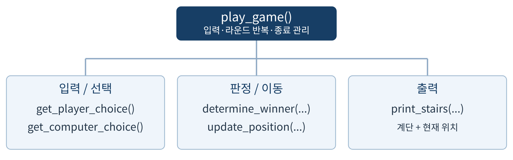
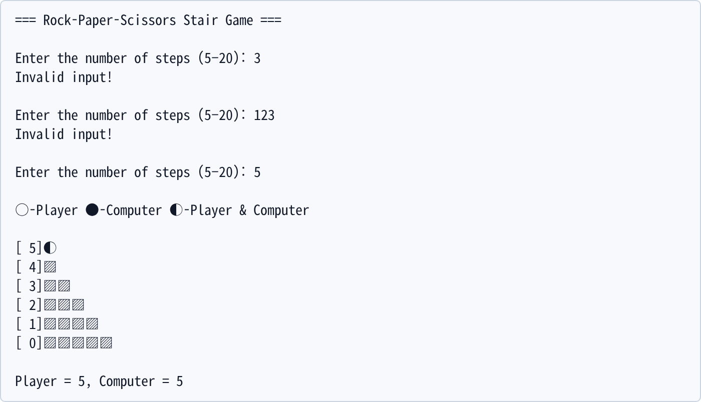
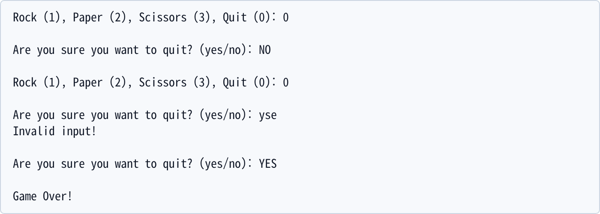
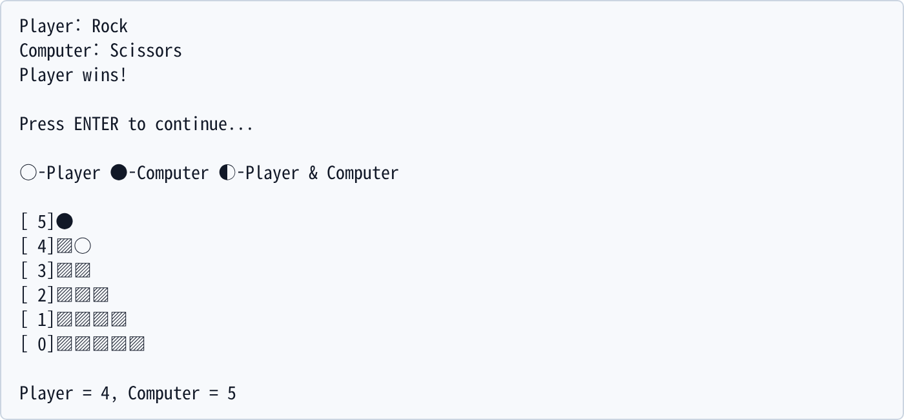
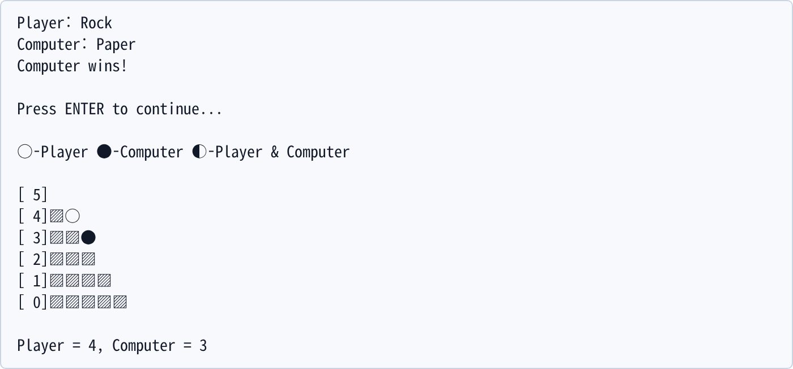
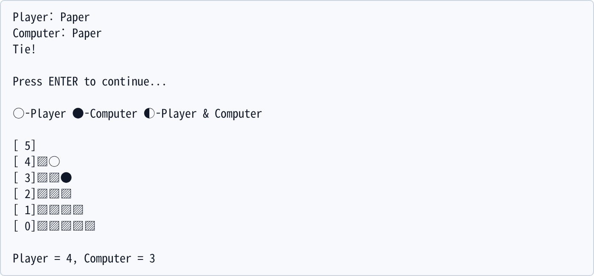
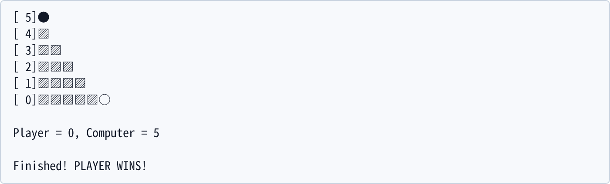
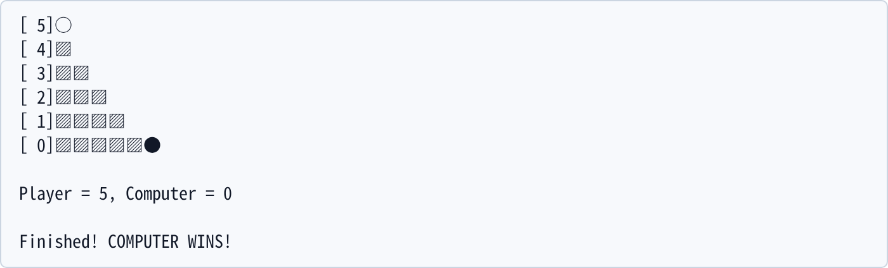

플레이어와 컴퓨터가 같은 높이에서 시작하여 가위바위보의 승자만 계단을 내려가는 콘솔 게임이다. 먼저 0단계에 도착한 쪽이 최종 승리한다. 계단 수는 5~20이며, 매 라운드의 선택·승패·현재 위치를 화면에 표시한다.
1.1 이동 규칙과 표시
승리한 선택
입력값
이동
Rock (바위)
1
1단계 아래로
Paper (보)
2
2단계 아래로
Scissors (가위)
3
3단계 아래로
무승부
두 선택이 같음
양쪽 위치 유지
승자는 자신이 고른 숫자만큼 내려간다. 이동 후 위치가 음수가 되면 0으로 보정한다. ○는 플레이어, ●는 컴퓨터, ◐는 같은 위치의 두 참가자를 뜻한다. 계단은 위에서부터 0까지 출력하며, s단계의 ▨ 개수는 ‘전체 계단 수 − s’이다.
1.2 함수 구조도

그림 1. play_game()이 필수 함수 5개를 호출하는 전체 구조
게임 상태인 전체 계단 수, 두 위치, 현재 선택과 판정 결과는 함수의 지역 변수로 관리한다. 필요한 값은 매개변수와 반환값으로 전달하며, 전역 변수와 추가 사용자 정의 함수는 사용하지 않았다. 계단 수 입력, 종료 확인, 안내 문구 출력은 play_game()이 담당한다.
Programming & Problem Solving2026 Fall · ASSN 1
2. 함수와 알고리즘
필수 함수 6개의 이름과 매개변수는 과제 명세 그대로 유지했다. 반환값은 다음과 같이 정했다. 반환값이 없는 출력·제어 함수는 None을 반환한다.
① 제목 출력 → 5~20의 정수가 입력될 때까지 재입력
② 두 위치를 전체 계단 수로 초기화 → 계단 출력
③ 어느 쪽도 0이 아닌 동안 다음을 반복
· 0~3의 유효한 플레이어 선택을 입력받음
· 선택이 0이면 yes/no를 유효할 때까지 확인
yes: Game Over!를 출력하고 종료 / no: ③으로 복귀
· 컴퓨터 선택 생성 → 승패 판정 → 선택과 결과 출력
· ENTER 입력 대기
· 무승부이면 유지, 아니면 승자 위치에서 승자 선택값 차감
결과가 음수이면 0으로 보정
· 계단과 현재 위치를 다시 출력
④ 0에 먼저 도착한 참가자의 최종 승리 메시지 출력
2.2 판정과 종료 조건
같은 선택이면 무승부이다. 플레이어의 승리 조합은 (1, 3), (2, 1), (3, 2)이며, 나머지는 컴퓨터 승리이다. 게임이 끝나는 라운드에도 ENTER 입력과 마지막 계단 출력을 수행한 후 최종 승자를 알린다. 시작 지점에서는 __main__ 조건을 통해 play_game()을 한 번 호출한다.
Programming & Problem Solving2026 Fall · ASSN 1
3. 실행 방법과 입력 검증
Python 3.x가 설치된 터미널에서 assn1.py가 있는 폴더로 이동한 뒤 ‘python assn1.py’를 실행한다. 별도 패키지나 데이터 파일은 필요 없다. UTF-8 계단 기호를 지원하는 글꼴을 사용한다. 검증 환경은 Linux, Python 3.12.14이다.
계단 수는 5~20, 게임 선택은 1(바위)·2(보)·3(가위)·0(종료)이다. 라운드 결과 뒤 ENTER를 누르면 이동한다. 과제의 가정에 따라 숫자 입력은 정수로 받으며, 정수가 아닌 입력에 대한 예외 처리는 추가하지 않았다.

그림 2. 3과 123은 거부하고 5를 허용한다. 두 참가자는 5단계에서 함께 시작한다.

그림 3. NO로 종료를 취소한 후 0을 다시 입력하면 재확인한다. yse는 거부하고 YES는 허용한다.
그림 2~8은 별도 Python 프로세스의 실제 PTY 출력에서 연속 구간을 발췌해 캡처했다. 재현을 위해 캡처 도구에서만 random.randint를 정해진 선택 순서로 대체했다. 일반 실행에서는 매 라운드 무작위로 선택하므로 같은 입력의 결과가 달라질 수 있다.
Programming & Problem Solving2026 Fall · ASSN 1
4. 라운드 실행 예시
전체 계단 수를 5로 정하고 컴퓨터 선택을 3 → 2 → 2로 고정한 한 실행의 앞 두 라운드이다. 두 경우 모두 결과를 표시한 다음 ENTER 입력을 받고 위치를 갱신한다.

그림 4. 플레이어 1(바위), 컴퓨터 3(가위): 플레이어만 5 → 4로 1단계 이동한다.

그림 5. 플레이어 1(바위), 컴퓨터 2(보): 컴퓨터만 5 → 3으로 2단계 이동한다.
그림 4의 새 위치 (4, 5)가 그림 5의 시작 상태이다. 컴퓨터가 이겼을 때 플레이어의 선택값 1이 아니라 컴퓨터의 선택값 2를 이동량으로 사용한다. 이처럼 승패 판정과 위치 계산을 분리해 양쪽에 동일한 이동 함수를 적용한다.
Programming & Problem Solving2026 Fall · ASSN 1
5. 무승부와 최종 종료 예시

그림 6. 그림 5 다음 라운드에서 양쪽이 보를 선택하면 무승부이다. 위치 (4, 3)가 유지된다.

그림 7. 별도 실행: 플레이어가 가위로 두 번 승리해 5 → 2 → 0으로 이동한다. 2 − 3은 0으로 보정된다.

그림 8. 별도 실행: 컴퓨터가 보·보·가위로 승리해 5 → 3 → 1 → 0으로 이동한 뒤 종료한다.
그림 7과 8은 마지막 계단부터 종료 메시지까지의 연속 구간이다. 양측 모두 0보다 아래로 표시되지 않으며, 최종 위치를 출력한 뒤 추가 라운드 입력 없이 종료된다.
Programming & Problem Solving2026 Fall · ASSN 1
6. 검증 및 고찰
‘python -m unittest discover -s tests -v’로 23개 테스트를 실행해 모두 통과했다. 9가지 승패 조합 등은 하위 사례로 검사하며 테스트 메서드 수와 구분한다. 일반 CLI의 실제 시작·종료도 별도 프로세스로 확인했다.
검증 항목
확인한 조건
결과
승패 / 난수
선택 9조합, randint(1, 3) 호출
통과
계단 수
5·20 허용, 4·21·음수 거부
통과
선택 입력
0~3 허용, −1·4·123 재입력
통과
계단 표시
초기·같은 위치·분리·0·두 자리 정렬
통과
이동 / 순서
승자 선택값, ENTER 후 갱신, 0 보정
통과
게임 흐름
무승부 유지, 양측 최종 승리
통과
종료 확인
대소문자, 오타, 취소 후 재확인
통과
독립 실행
CLI 종료 코드 0, import 시 자동 실행 없음
통과
6.1 구현상의 검토와 결정
① 같은 위치에서는 두 기호를 붙이지 않고 ◐ 하나를 우선 출력했다. ② 승자 선택값을 이동량으로 전달해 컴퓨터 승리에서도 올바른 거리를 이동하도록 했다. ③ 종료 입력과 잘못된 선택은 라운드로 처리하지 않으므로 컴퓨터 난수를 뽑지 않는다. ④ 결과 → ENTER → 이동 → 재출력 순서를 지켜 마지막 라운드도 동일하게 처리했다.
검증에서 발견된 실행 실패나 미해결 기능 결함은 없었다. 정수가 아닌 숫자 입력, 입력 스트림의 강제 종료, 글꼴 미지원은 명세 밖의 상황으로 처리하지 않았다. 개인의 개발 경험을 추정하는 대신 코드와 검증에서 확인한 결정 사항을 정리했다.
6.2 결론
본 구현은 입력 검증, 승패 판정, 위치 계산과 출력을 함수로 나누고 지역 상태와 반환값으로 연결한다. 이 구조는 승패 9조합과 이동 경계처럼 작은 단위의 검증을 가능하게 하며, 전체 게임에서는 반복문과 종료 조건의 순서를 명확히 보여 준다.
6.3 향후 개선
별도 확장에서는 비정수 입력과 EOF 처리, 기호를 지원하지 않는 터미널의 ASCII 표시, 재시작 메뉴를 고려할 수 있다. 현재 버전에는 명세의 출력 형식을 유지하기 위해 이러한 추가 기능을 넣지 않았다.
참고 자료
[1] assn1_2026f.pdf, CSED101 Programming Assignment #1 (기능 명세). [2] AssnReadMe.pdf (보고서 구성과 파일 형식). [3] report_ex1.pdf, report_ex2.pdf (보고서 구성·시각 형식 참고). 실행 근거: docs/transcripts/ · 검증 코드: tests/test_assn1.py